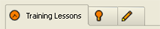
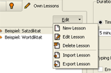
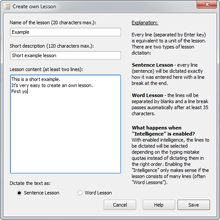

Launching the Program | Table of Contents | Lesson Parameters
Launching the Program | Table of Contents | Lesson Parameters 
6. Training
6.1 Lessons
The selection of lessons can be found on the left side of the home window. TIPP10 distinguishes between three types of lessons that can be selected on the tab with the clock, light bulb and pencil icons - Training Lessons, Open Lessons and Own Lessons.

The individual tabs are described in more detail below:
6.1.1 Training Lessons
Training Lessons will help you learn touch typing step by step. The first lesson will teach you the basic characters in the home row position. Each lesson after that will add new keys (usually two). The Training Lessons are based on the frequency of the characters in everyday language use. That means you will begin practicing with the characters you are likely to use most.
If this is your first time learning touch typing we suggest you work through all the lessons in the order they appear. You should repeat each lesson until you have eliminated all mistakes or only make very few and can type without hesitation. Then you are ready to tackle the next lesson.
6.1.2 Open Lessons
Open Lessons are dictations covering various topics. Unlike the training lessons, open lessons do not target specific characters. They are particularly well suited for users that are already fairly proficient at touch typing and want to improve their typing speed and reduce the number of typing errors they make. At this stage Open Lessons are sure to be more entertaining than Training Lessons because of the information in the texts that are dictated.
You can filter the lessons by topic in the topic tab above the lesson. A brief description of the lesson will be shown by holding your mouse pointer over one of the lessons in the list (approx. 1 second).
6.1.3 Own Lessons
You can create your own dictations using the Own Lessons tab. TIPP10 installs two example dictations automatically so that you can see how the feature works. Instructions for deleting these examples can be found further below.
To create your own lessons or edit existing lessons click on the Edit button to the right above the lesson list. Editing or deleting an existing lesson only affects the lesson that is currently selected in the list beneath the menu.

An entry mask will appear when you select to create a new lesson or edit an existing one.

You can name your lesson in the first entry field. This name will be displayed in the lesson list and the results. For formatting reasons the name must not exceed 20 characters and cannot be changed after it has been saved the first time.
You can add a description of the lesson in the second entry field. This can be longer than the name (120 characters max.) and will be displayed in the mouseover text.
You can enter the actual text of the dictation in the entry field at the bottom. Please enter at least two lines of text (this ensures the dictation can work with the Intelligence feature - a more detailed description can be found further below).
Finally, you can choose whether the text should be used for a Sentence Lesson or a Word Lesson.
In Sentence Lessons the individual lines (sentences) will be dictated as they were entered with a line break at the end. The user will see the ¶ symbol at the end of each line and should strike the enter key. Sentence lessons are most useful when you simply want to enter a text that will be dictated back to you.
In a Word Lesson, on the other hand, the individual lines will be dictated and separated by a space. A line break comes automatically after a minimum of 35 characters, the ¶ symbol will be added to the last line (word) after this minimum number of characters has been reached. A Word Lesson should therefore be used when you want to list a series of certain words or practice spelling.
The distinction between a Sentence and a Word Lesson is important if you are going to use the Intelligence feature that you can activate before a lesson. When the Intelligence function is activated the individual lines in the dictation will not be displayed in their original order. The dictation will be guided by the typing mistakes that have been made to increase your learning curve. The intelligence feature delivers better results when used with a Word Lesson because certain words or word combinations can be listed and dictated in a targeted fashion based on typing errors made.
Sentences are usually longer than words and sentence lessons cannot be updated so frequently when the Intelligence feature is activated. A Sentence Lesson also does not provide a large variety of ways to extend the dictation in a useful way. If you activate the intelligence function in a Sentence Lesson we suggest using a large number of the shortest possible sentences.
Word Lessons with the Intelligence feature activated work like Training Lessons 1 through 5, Sentence Lessons like Training Lessons 6 through 18.
To save a lesson you have created yourself click on the Save button. The text will be analyzed and saved in your database. The name of your lesson should now appear in the lesson list and be ready to use.
If you wish to delete from the list a lesson you have created yourself simply select it with your mouse and click Delete Lesson in the Edit menu. When you delete a lesson all associated stored data will also be deleted (completed lessons in your results).
You can also import and export lessons. This is very handy when you want to save or share lessons with other users. To do this, select Import Lesson or Export Lesson in the Edit menu.
 Launching the Program | Table of Contents | Lesson Parameters
Launching the Program | Table of Contents | Lesson Parameters 
© 2006-2011 Tom Thielicke IT Solutions